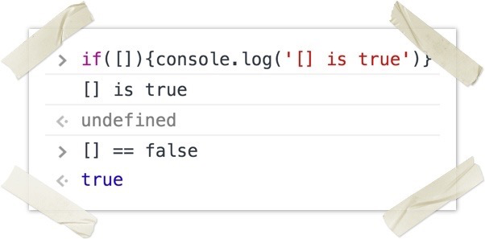
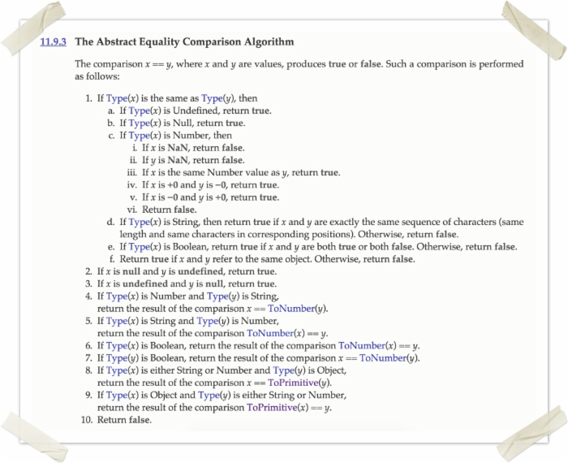
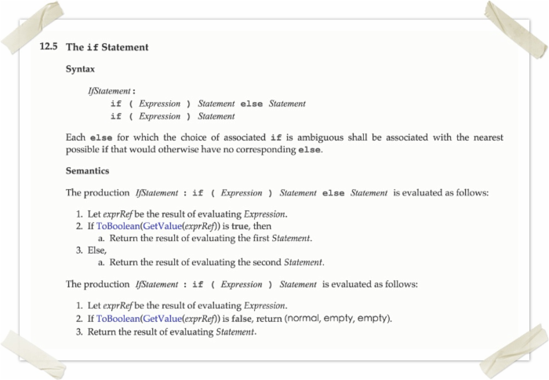
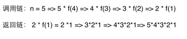

HTML是一种基本的WEB网页设计语言，XHTML是一个基于XML的置标语言
最主要的不同：
XHTML 元素必须被正确地嵌套。
XHTML 元素必须被关闭。
标签名必须用小写字母。
XHTML 文档必须拥有根元素。
块级元素：div p h1 h2 h3 h4 form ul
行内元素: a b br i span input select
Css盒模型:内容，border ,margin，padding ,
弹性盒模型
学习弹性盒模型的小游戏
内联 内嵌 外链 导入
区别 ：同时加载
前者无兼容性，后者CSS2.1以下浏览器不支持
标签选择符 类选择符 id选择符
继承不如指定 Id>class>标签选择
1.双边距BUG float引起的 使用display
2.3像素问题 使用float引起的 使用dislpay:inline -3px
3.超链接hover 点击后失效 使用正确的书写顺序 link visited hover active
4.Ie z-index问题 给父级添加position:relative
5.Png 透明 使用js代码 改
6.Min-height 最小高度 !Important 解决’
7.select 在ie6下遮盖 使用iframe嵌套
8.为什么没有办法定义1px左右的宽度容器(IE6默认的行高造成的，使用over:hidden,zoom:0.08 line-height:1px)
9.ie 6 不支持!important
Alt 当图片不显示是 用文字代表。
Title 为该属性提供信息
Reset重置浏览器的css默认属性 浏览器的品种不同，样式不同，然后重置，让他们统一
Css 精灵 把一堆小的图片整合到一张大的图片上，减轻服务器对图片的请求数量
盒子模型 渲染模式的不同
使用 window.top.document.compatMode 可显示为什么模式
文件合并
文件最小化/文件压缩
使用CDN托管
缓存的使用
直观的认识标签 对于搜索引擎的抓取有好处
1.使用空标签清除浮动 clear:both(理论上能清楚任何标签，，，增加无意义的标签)
2.使用overflow:auto(空标签元素清除浮动而不得不增加无意代码的弊端,,使用zoom:1用于兼容IE)
3.是用afert伪元素清除浮动(用于非IE浏览器)
<!--[if IE 6]--><![end if]-->
_marging \\IE 6
+margin \\IE 7
Marging:0 auto \9 所有Ie
Margin \0 \\IE 8
使用 typeof 的弊端是显而易见的(这种弊端同使用 instanceof )：
let obj = {};
let arr = [];
console.log(typeof obj === 'object'); //true
console.log(typeof arr === 'object'); //true
console.log(typeof null === 'object'); //true
从上面的输出结果可知， typeof bar === "object" 并不能准确判断 bar 就是一个 Object。可以通过 Object.prototype.toString.call(bar) === "[object Object]" 来避免这种弊端：
let obj = {};
let arr = [];
console.log(Object.prototype.toString.call(obj)); //[object Object]
console.log(Object.prototype.toString.call(arr)); //[object Array]
console.log(Object.prototype.toString.call(null)); //[object Null]
另外，为了珍爱生命，请远离 == ：
而 [] === false 是返回 false 的。
(function(){
var a = b = 3;
})();
console.log("a defined? " + (typeof a !== 'undefined'));
console.log("b defined? " + (typeof b !== 'undefined'));
这跟变量作用域有关，输出换成下面的：
console.log(b); //3
console,log(typeof a); //undefined
拆解一下自执行函数中的变量赋值：
b = 3;var a = b;
所以 b 成了全局变量，而 a 是自执行函数的一个局部变量。
var myObject = {
foo: "bar",
func: function() {
var self = this;
console.log("outer func: this.foo = " + this.foo);
console.log("outer func: self.foo = " + self.foo);
(function() {
console.log("inner func: this.foo = " + this.foo);
console.log("inner func: self.foo = " + self.foo);
}());
}
};
myObject.func();
第一个和第二个的输出不难判断，在 ES6 之前，JavaScript 只有函数作用域，所以 func 中的 IIFE 有自己的独立作用域，并且它能访问到外部作用域中的 self ，所以第三个输出会报错，因为 this 在可访问到的作用域内是 undefined ，第四个输出是 bar 。如果你知道闭包，也很容易解决的：
(function(test) {
console.log("inner func: this.foo = " + test.foo); //'bar'
console.log("inner func: self.foo = " + self.foo);
}(self));
如果对闭包不熟悉，可以戳此：从作用域链谈闭包
换句话说，为什么要用立即执行函数表达式（Immediately-Invoked Function Expression）。
IIFE 有两个比较经典的使用场景，一是类似于在循环中定时输出数据项，二是类似于 JQuery/Node 的插件和模块开发。
for(var i = 0; i < 5; i++) {
setTimeout(function() {
console.log(i);
}, 1000);
}
上面的输出并不是你以为的0，1，2，3，4，而输出的全部是5，这时 IIFE 就能有用了：
for(var i = 0; i < 5; i++) {
(function(i) {
setTimeout(function() {
console.log(i);
}, 1000);
})(i)
}
而在 JQuery/Node 的插件和模块开发中，为避免变量污染，也是一个大大的 IIFE：
(function($) {
//代码
} )(jQuery);
function foo1()
{
return {
bar: "hello"
};
}
function foo2()
{
return {
bar: "hello"
};
}
在编程语言中，基本都是使用分号（;）将语句分隔开，这可以增加代码的可读性和整洁性。而在JS中，如若语句各占独立一行，通常可以省略语句间的分号（;），JS 解析器会根据能否正常编译来决定是否自动填充分号：
var test = 1 + 2
console.log(test); //3
在上述情况下，为了正确解析代码，就不会自动填充分号了，但是对于 return 、 break 、 continue 等语句，如果后面紧跟换行，解析器一定会自动在后面填充分号(;)，所以上面的第二个函数就变成了这样：
function foo2()
{
return;
{
bar: "hello"
};
}
所以第二个函数是返回 undefined 。
NaN 是 Not a Number 的缩写，JavaScript 的一种特殊数值，其类型是 Number，可以通过 isNaN(param) 来判断一个值是否是 NaN ：
console.log(isNaN(NaN)); //true
console.log(isNaN(23)); //false
console.log(isNaN('ds')); //true
console.log(isNaN('32131sdasd')); //true
console.log(NaN === NaN); //false
console.log(NaN === undefined); //false
console.log(undefined === undefined); //false
console.log(typeof NaN); //number
console.log(Object.prototype.toString.call(NaN)); //[object Number]
ES6 中， isNaN() 成为了 Number 的静态方法： Number.isNaN() .
console.log(0.1 + 0.2); //0.30000000000000004
console.log(0.1 + 0.2 == 0.3); //false
JavaScript 中的 number 类型就是浮点型，JavaScript 中的浮点数采用IEEE-754 格式的规定，这是一种二进制表示法，可以精确地表示分数，比如1/2，1/8，1/1024，每个浮点数占64位。但是，二进制浮点数表示法并不能精确的表示类似0.1这样 的简单的数字，会有舍入误差。
由于采用二进制，JavaScript 也不能有限表示 1/10、1/2 等这样的分数。在二进制中，1/10(0.1)被表示为 0.00110011001100110011…… 注意 0011 是无限重复的，这是舍入误差造成的，所以对于 0.1 + 0.2 这样的运算，操作数会先被转成二进制，然后再计算：
0.1 => 0.0001 1001 1001 1001…（无限循环）0.2 => 0.0011 0011 0011 0011…（无限循环）
双精度浮点数的小数部分最多支持 52 位，所以两者相加之后得到这么一串 0.0100110011001100110011001100110011001100…因浮点数小数位的限制而截断的二进制数字，这时候，再把它转换为十进制，就成了 0.30000000000000004。
对于保证浮点数计算的正确性，有两种常见方式。
一是先升幂再降幂：
function add(num1, num2){
let r1, r2, m;
r1 = (''+num1).split('.')[1].length;
r2 = (''+num2).split('.')[1].length;
m = Math.pow(10,Math.max(r1,r2));
return (num1 * m + num2 * m) / m;
}
console.log(add(0.1,0.2)); //0.3
console.log(add(0.15,0.2256)); //0.3756
二是是使用内置的 toPrecision() 和 toFixed() 方法， 注意，方法的返回值字符串。
function add(x, y) {
return x.toPrecision() + y.toPrecision()
}
console.log(add(0.1,0.2)); //"0.10.2"
可以将 x 转换成10进制，判断和本身是不是相等即可：
function isInteger(x) {
return parseInt(x, 10) === x;
}
ES6 对数值进行了扩展，提供了静态方法 isInteger() 来判断参数是否是整数：
Number.isInteger(25) // true
Number.isInteger(25.0) // true
Number.isInteger(25.1) // false
Number.isInteger("15") // false
Number.isInteger(true) // false
JavaScript能够准确表示的整数范围在 -2^53 到 2^53 之间（不含两个端点），超过这个范围，无法精确表示这个值。ES6 引入了 Number.MAX_SAFE_INTEGER 和 Number.MIN_SAFE_INTEGER 这两个常量，用来表示这个范围的上下限，并提供了 Number.isSafeInteger() 来判断整数是否是安全型整数。
(function() {
console.log(1);
setTimeout(function(){console.log(2)}, 1000);
setTimeout(function(){console.log(3)}, 0);
console.log(4);
})();
这个就不多解释了，主要是 JavaScript 的定时机制和时间循环，不要忘了，JavaScript 是单线程的。详解可以参考 从setTimeout谈JavaScript运行机制 。
function isPalindrome(str) {
str = str.replace(/\W/g, '').toLowerCase();
return (str == str.split('').reverse().join(''));
}
这个题我在 codewars 上碰到过，并收录了一些不错的解决方式，可以戳这里： Palindrome For Your Dome
console.log(sum(2,3)); // Outputs 5
console.log(sum(2)(3)); // Outputs 5
针对这个题，可以判断参数个数来实现：
function sum() {
var fir = arguments[0];
if(arguments.length === 2) {
return arguments[0] + arguments[1]
} else {
return function(sec) {
return fir + sec;
}
}
}
for (var i = 0; i < 5; i++) {
var btn = document.createElement('button');
btn.appendChild(document.createTextNode('Button ' + i));
btn.addEventListener('click', function(){ console.log(i); });
document.body.appendChild(btn);
}
1、点击 Button 4 ，会在控制台输出什么？
2、给出一种符合预期的实现方式
1、点击5个按钮中的任意一个，都是输出5
2、参考 IIFE。
var arr1 = "john".split(''); j o h n
var arr2 = arr1.reverse(); n h o j
var arr3 = "jones".split(''); j o n e s
arr2.push(arr3);
console.log("array 1: length=" + arr1.length + " last=" + arr1.slice(-1));
console.log("array 2: length=" + arr2.length + " last=" + arr2.slice(-1));
会输出什么呢？你运行下就知道了，可能会在你的意料之外。
MDN 上对于 reverse() 的描述是酱紫的：
Description
The reverse method transposes the elements of the calling array object in place, mutating the array, and returning a reference to the array.
reverse() 会改变数组本身，并返回原数组的引用。
slice 的用法请参考： slice
console.log(1 + "2" + "2");
console.log(1 + +"2" + "2");
console.log(1 + -"1" + "2");
console.log(+"1" + "1" + "2");
console.log( "A" - "B" + "2");
console.log( "A" - "B" + 2);
输出什么，自己去运行吧，需要注意三个点：
console.log(2 + 1 + '3'); / /‘33’
console.log('3' + 2 + 1); //'321'
console.log(typeof '3'); // string
console.log(typeof +'3'); //number
同样，可以在数字前添加 '' ，将数字转为字符串
console.log(typeof 3); // number
console.log(typeof (''+3)); //string
console.log('a' * 'sd'); //NaN
console.log('A' - 'B'); // NaN
这张图是运算转换的规则

var list = readHugeList();
var nextListItem = function() {
var item = list.pop();
if (item) {
// process the list item...
nextListItem();
}
};
原文上的解决方式是加个定时器：
var list = readHugeList();
var nextListItem = function() {
var item = list.pop();
if (item) {
// process the list item...
setTimeout( nextListItem, 0);
}
};
解决方式的原理请参考第10题。
可以参考此篇：从作用域链谈闭包
for (var i = 0; i < 5; i++) {
setTimeout(function() { console.log(i); }, i * 1000 );
}
请往前面翻，参考第4题，解决方式已经在上面了
console.log("0 || 1 = "+(0 || 1));
console.log("1 || 2 = "+(1 || 2));
console.log("0 && 1 = "+(0 && 1));
console.log("1 && 2 = "+(1 && 2));
逻辑与和逻辑或运算符会返回一个值，并且二者都是短路运算符：
console.log(1 && 2 && 0); //0
console.log(1 && 0 && 1); //0
console.log(1 && 2 && 3); //3
如果某个操作数为 false ，则该操作数之后的操作数都不会被计算
console.log(1 || 2 || 0); //1
console.log(0 || 2 || 1); //2
console.log(0 || 0 || false); //false
如果某个操作数为 true ，则该操作数之后的操作数都不会被计算
如果逻辑与和逻辑或作混合运算，则逻辑与的优先级高：
console.log(1 && 2 || 0); //2
console.log(0 || 2 && 1); //1
console.log(0 && 2 || 1); //1
在 JavaScript，常见的 false 值：
0, '0', +0, -0, false, '',null,undefined,null,NaN
要注意 空数组([]) 和 空对象({}):
console.log([] == false) //true
console.log({} == false) //false
console.log(Boolean([])) //true
console.log(Boolean({})) //true
所以在 if 中， [] 和 {} 都表现为 true ：

console.log(false == '0')
console.log(false === '0')
请参考前面第14题运算符转换规则的图。
var a={},
b={key:'b'},
c={key:'c'};
a[b]=123;
a[c]=456;
console.log(a[b]);
输出是 456，参考原文的解释：
The reason for this is as follows: When setting an object property, JavaScript will implicitly stringify the parameter value. In this case, since b and c are both objects, they will both be converted to
[object Object]
. As a result, a[b] anda[c] are both equivalent to a[
[object Object]
] and can be used interchangeably. Therefore, setting or referencing a[c] is precisely the same as setting or referencing a[b].
console.log((function f(n){return ((n > 1) ? n * f(n-1) : n)})(10));
结果是10的阶乘。这是一个递归调用，为了简化，我初始化 n=5，则调用链和返回链如下：

(function(x) {
return (function(y) {
console.log(x);
})(2)
})(1);
输出1，闭包能够访问外部作用域的变量或参数。
var hero = {
_name: 'John Doe',
getSecretIdentity: function (){
return this._name;
}
};
var stoleSecretIdentity = hero.getSecretIdentity;
console.log(stoleSecretIdentity());
console.log(hero.getSecretIdentity());
将 getSecretIdentity 赋给 stoleSecretIdentity ，等价于定义了 stoleSecretIdentity 函数：
var stoleSecretIdentity = function (){
return this._name;
}
stoleSecretIdentity 的上下文是全局环境，所以第一个输出 undefined 。若要输出 John Doe ，则要通过 call 、 apply 和 bind 等方式改变 stoleSecretIdentity 的 this 指向(hero)。
第二个是调用对象的方法，输出 John Doe 。
函数接受两个参数：
原文利用 深度优先搜索 (Depth-First-Search) 给了一个实现：
function Traverse(p_element,p_callback) {
p_callback(p_element);
var list = p_element.children;
for (var i = 0; i < list.length; i++) {
Traverse(list[i],p_callback); // recursive call
}
}